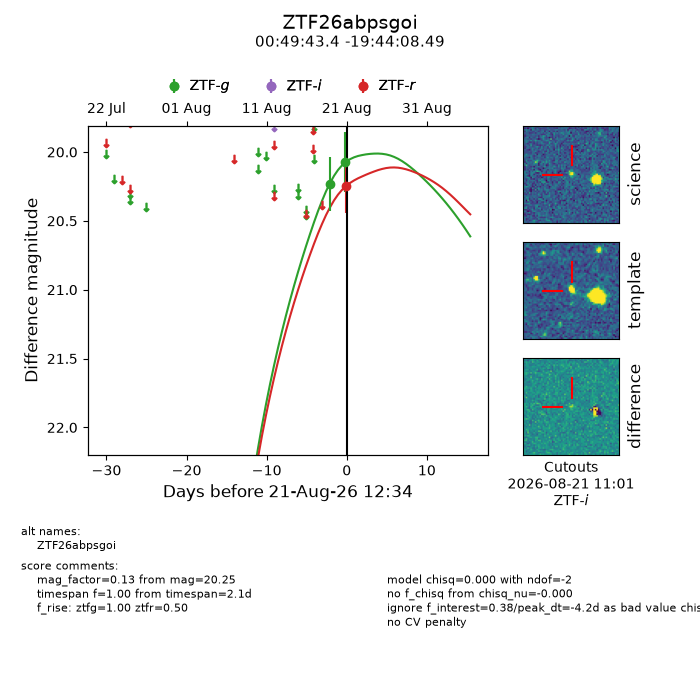
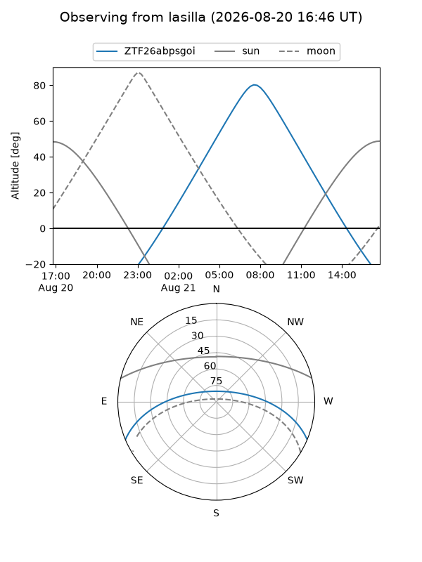
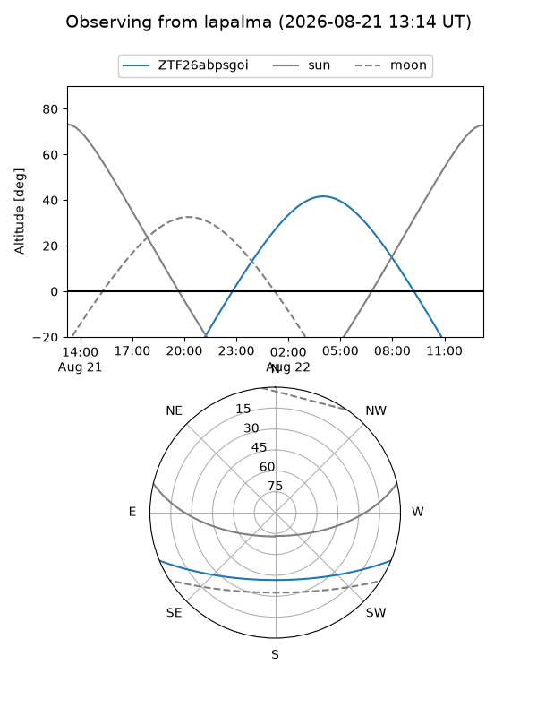
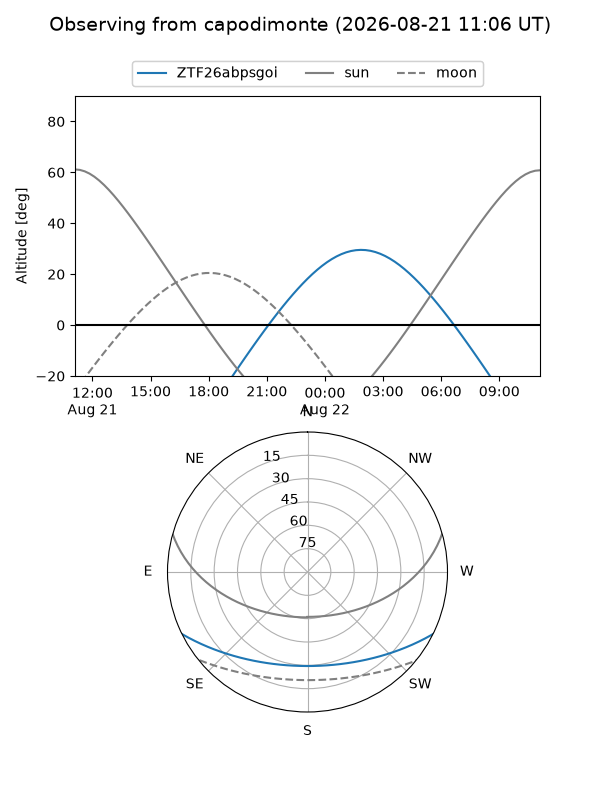
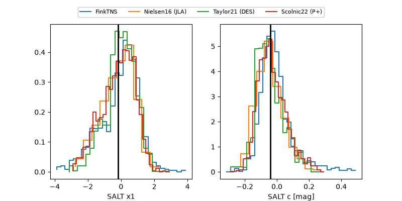

ZTF26abpsgoi
Target ZTF26abpsgoi at 2026-08-21 12:37
Aliases and brokers:
FINK-ZTF: ztf.fink-portal.org/ZTF26abpsgoi
Lasair-ZTF: lasair-ztf.lsst.ac.uk/objects/ZTF26abpsgoi
ALeRCE-ZTF: alerce.online/object/ZTF26abpsgoi
Direct TNS query: direct search
alt names
ZTF26abpsgoi (ztf,fink_ztf)
Coordinates:
equatorial (ra, dec) = 12.4308,-19.73569
equatorial (HMS+DMS) = 00:49:43.39,-19:44:08.49
galactic (l, b) = (119.7987,-82.59700)
Flags:
peak dt: -4.2
Photometry:
last ztfg=20.07, ztfr=20.25
2 ztfg, 1 ztfr detections
Lightcurve

Visibility



Additional plots
